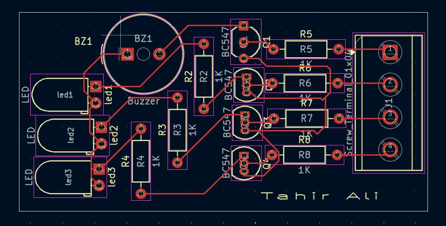
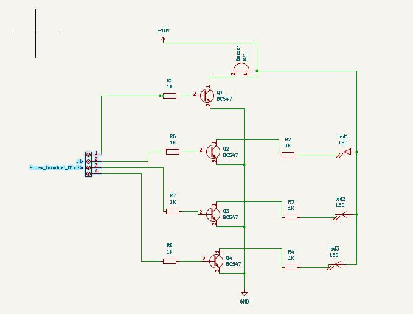

Water Level Indicator PCB
KiCad & Altium · 2-Layer PCB · Mar 2026



Overview
A 2-layer sensor and alert board built around four BC547 transistor stages, each one driven by a probe input on a 4-pin screw terminal. As water reaches each probe, its transistor stage switches on — lighting a corresponding level LED, and triggering an onboard buzzer on the topmost stage for an audible full-tank alert on a 10V supply rail.
The design was carried through both KiCad and Altium Designer, which meant reconciling two different footprint libraries and routing engines on the same schematic — resolving routing conflicts and footprint mismatches along the way, and clearing DRC on both toolchains before calling it done.
Key Features
- Four BC547 transistor-driven level detection stages
- 4-pin screw terminal for direct probe wiring
- Three LED level indicators plus a buzzer for audible alerts
- Full schematic through footprint assignment and layout
- 3D visualization for design review
- Routing conflicts and footprint mismatches resolved
- Verified across both KiCad and Altium Designer workflows